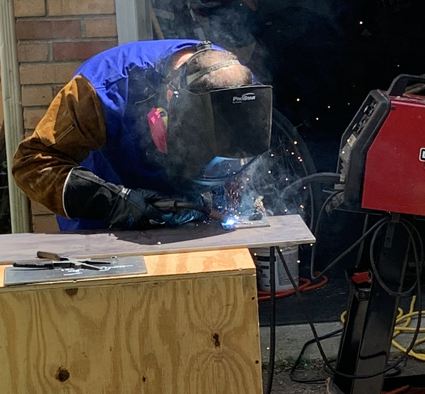
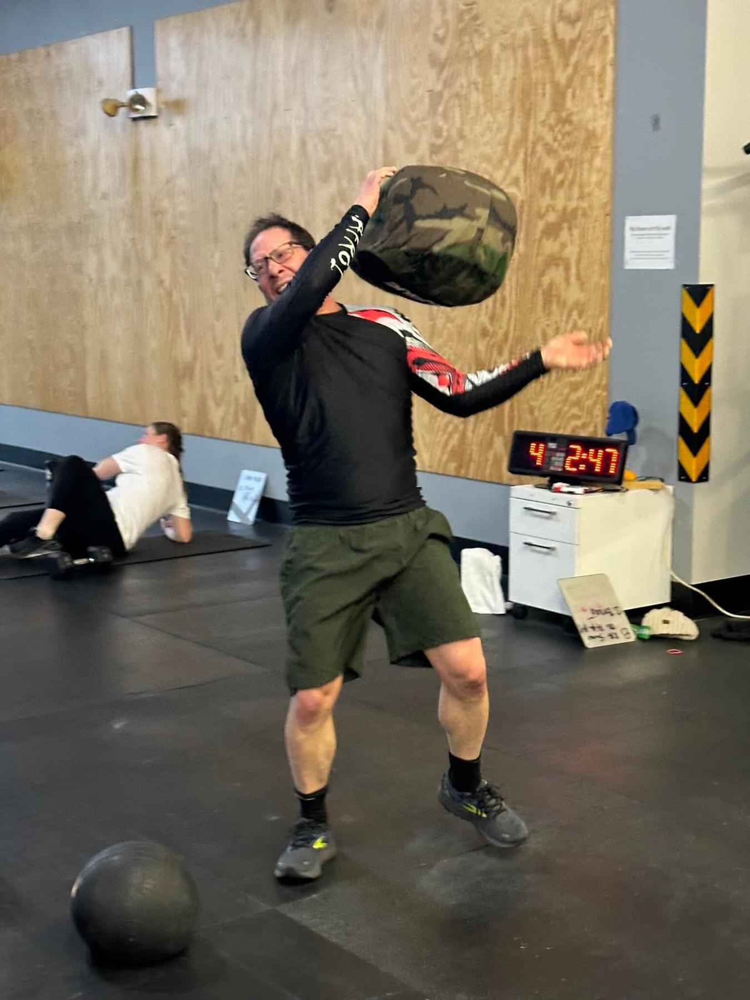

Mark Shalinsky, PhD: scientist, operator, intrapreneur, AI builder.
Data Sales Science is founder-led. The value is not a methodology deck — it is experience building revenue systems inside companies that needed to grow.

Built inside real operating environments.
Mark was an early employee at JoVE, helping build sales organizations serving scientists, academic libraries, and life science companies. At Duo Security, he helped build sales operations systems during the company’s rapid growth toward its $2.35B acquisition by Cisco. At FatStax, he built sales and sales operations through acquisition by BigTinCan. Later, as VP of Revenue Operations at TRUiC, he worked inside high-volume B2C affiliate marketing systems focused on scale, automation, and performance.
Today, Mark runs Litigation Connection while building practical operational tools like InvoiceAndCollect and workflow systems that solve real business bottlenecks.
Connect on LinkedInI don’t know quit.
Mark wrestled competitively from age 15 to 25, competing across the globe and training alongside Olympic and world-level wrestlers through the Montreal Wrestling Club. He later moved into judo and Brazilian jiu-jitsu, and has spent the last decade in CrossFit to stay in fighting shape — still working on double unders. That background continues to shape how he approaches business: discipline, resilience, pressure, and execution.
